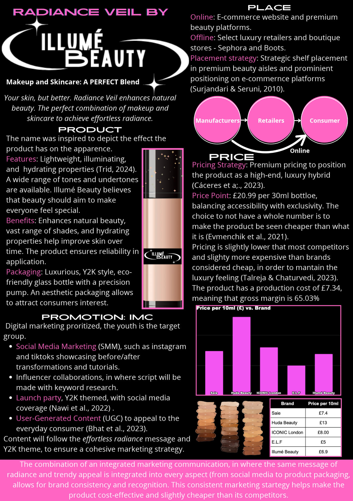
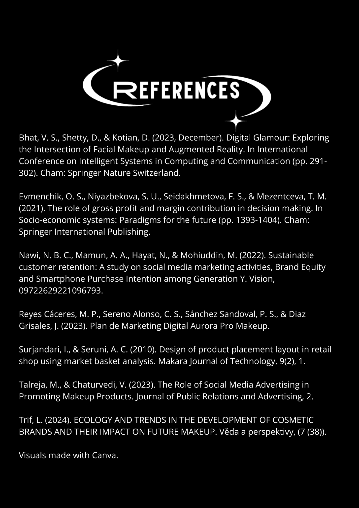
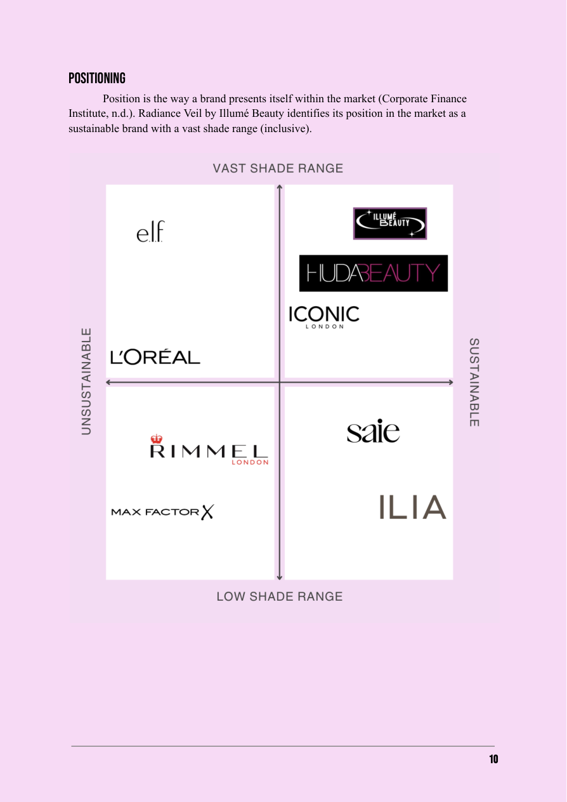

PROYECTO 06 · CONCEPTO ACADÉMICO
Illumé Beauty.
Del concepto a la estrategia.
PRESENTACIÓN ORIGINAL
Póster de presentación de marca
Presentación original que creé para Radiance Veil de Illumé Beauty: identidad visual, concepto del producto y propuestas de distribución, precio y promoción. Es un concepto académico; las tiendas citadas son canales propuestos, no acuerdos comerciales.


Referencias de la presentación


Creación de marca y análisis de marketing para Radiance Veil, un concepto de producto que combina maquillaje y cuidado de la piel.
Estrategia de Marca, Análisis de Mercado, Planificación Comercial
01El trabajo académico
Crear una marca y desarrollar un plan de marketing fundamentado.
02Concepto de marca y producto
La propuesta combina una amplia gama de tonos, beneficios inspirados en el cuidado de la piel, una identidad influida por la estética de los años 2000 y envases de vidrio. Son decisiones de diseño y posicionamiento, no propiedades del producto verificadas de forma independiente.
03Análisis y estrategia
- PESTLE y DAFO para explorar el entorno, riesgos y oportunidades.
- Cinco fuerzas de Porter y posicionamiento frente a competidores.
- Segmentación, selección de públicos, posicionamiento y propuesta de valor.
- Venta directa al consumidor con propuestas para Instagram, TikTok e influencers.
04Planificación comercial
El plan incluye precios, estimaciones de costes unitarios, escenarios de ventas y previsión de gastos. Las cifras y metas de audiencia son supuestos o previsiones, no ventas, beneficios ni seguidores obtenidos.
05Competencias demostradas
Conectar investigación de mercado, posicionamiento de marca, necesidades del cliente, canales y supuestos comerciales en un plan estructurado.
MATERIALES DEL PROYECTO
Extractos complementarios del plan de marketing
Páginas originales con identidad visual, análisis de fortalezas, debilidades, oportunidades y amenazas, selección del público, mapa de posicionamiento y propuesta de valor. El PDF conserva los diseños originales y explica su carácter académico.
El trabajo académico se realizó en inglés. El póster, las referencias y los extractos del PDF conservan ese idioma.

